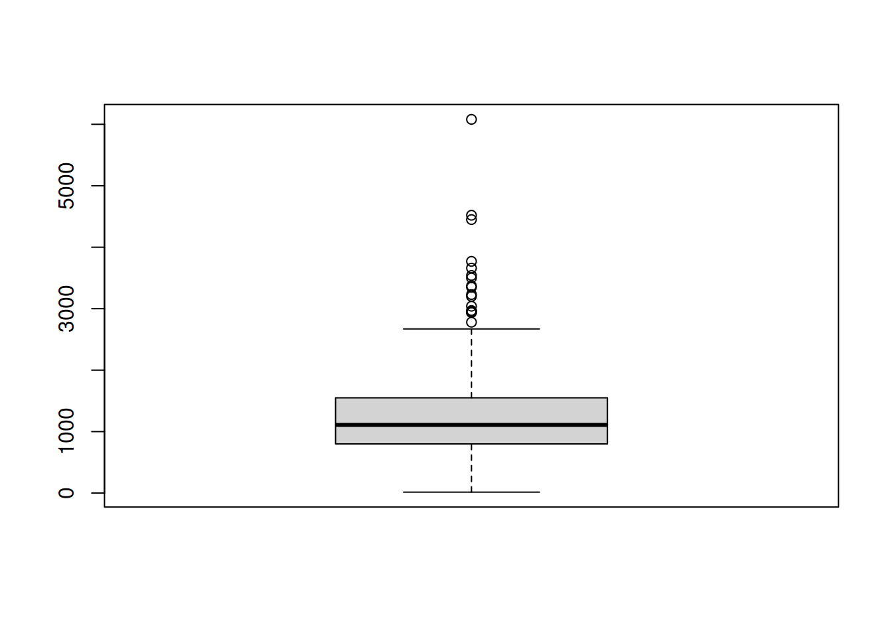
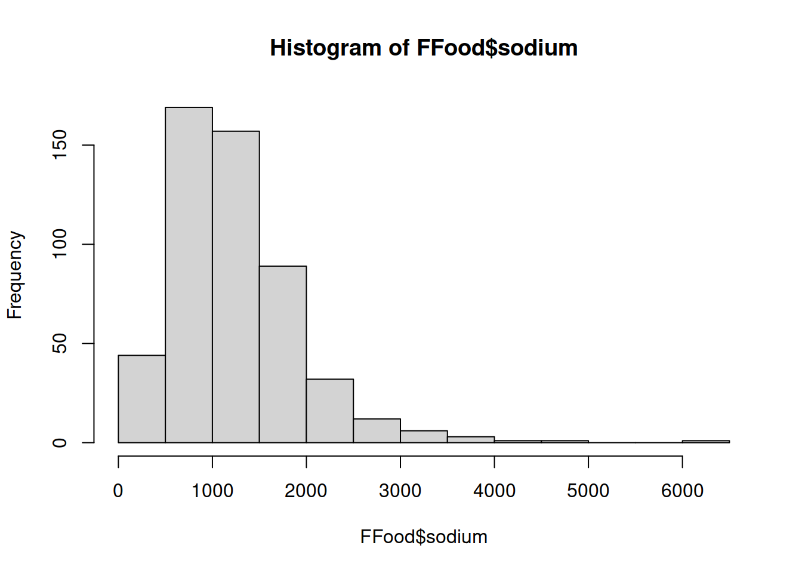
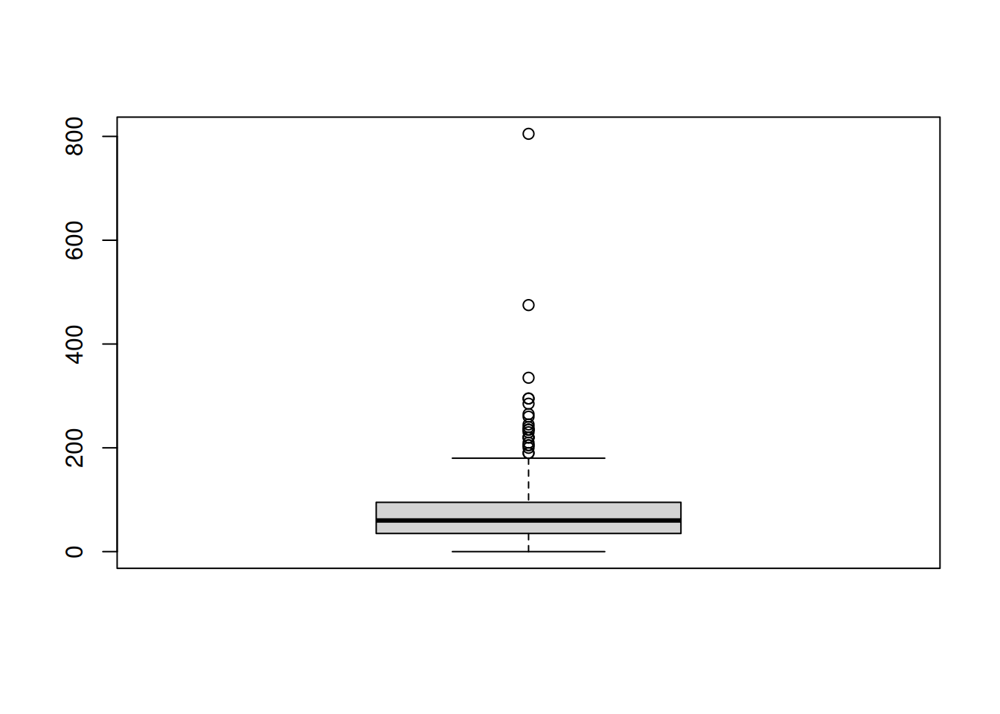
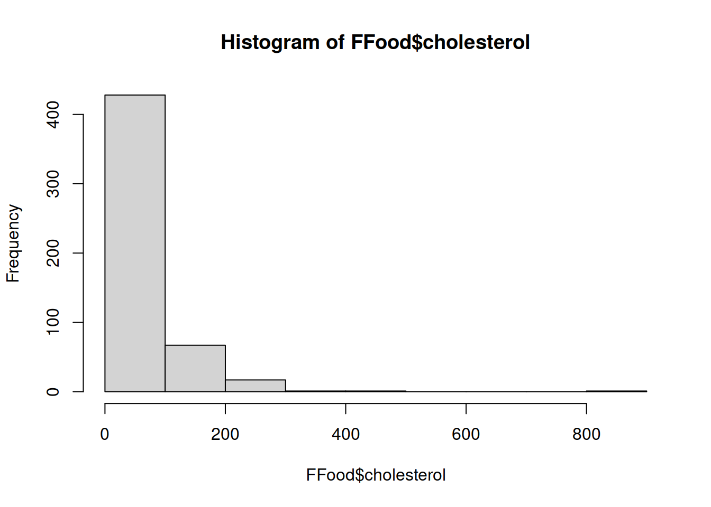
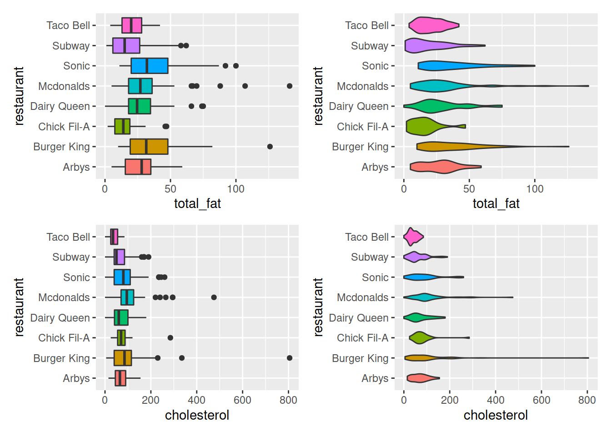
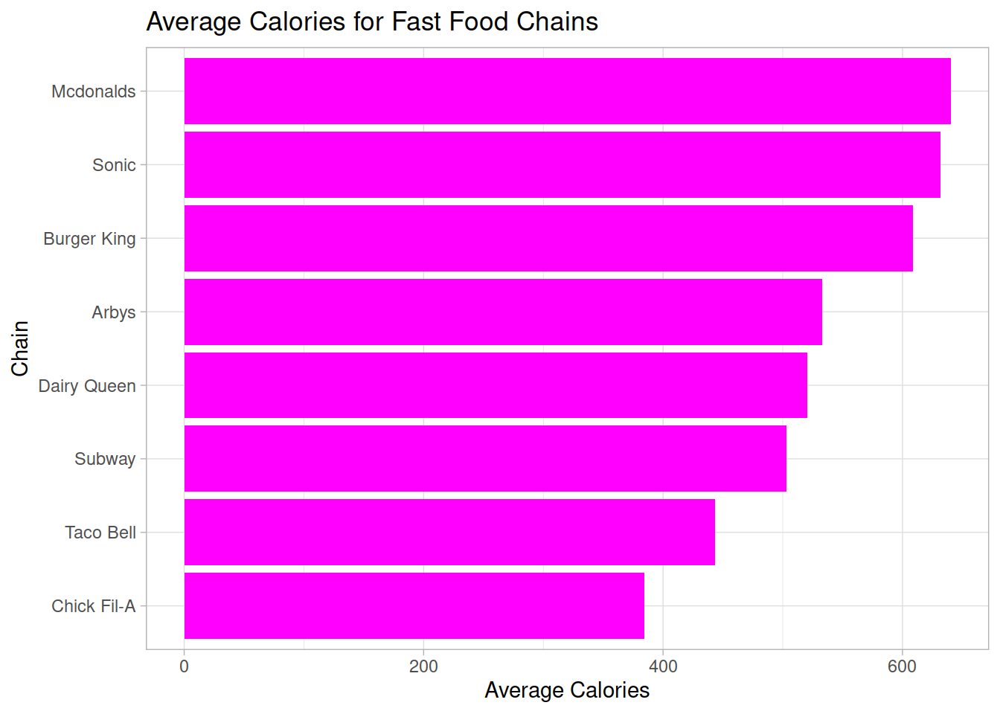
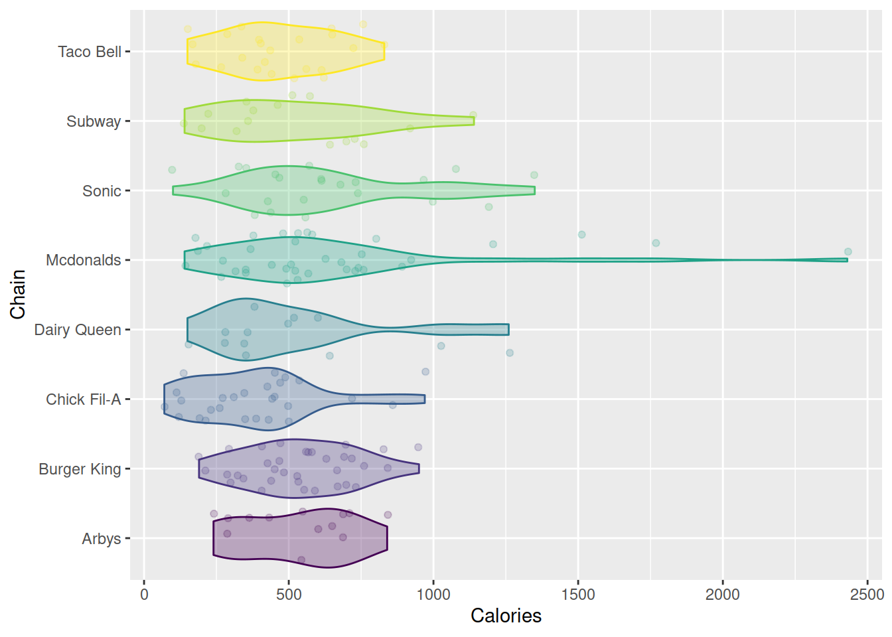

These data came care of a Tidy Tuesday a while ago. The data consist of Fast Food menu items for a selection of fast food chains. The units are menu items. We have the chain [restaurant], item [the item name], and a series of variables (columns) representing sodium, cholesterol, fat, calories, and other information. Some is missing. The data can be imported from the tidytuesday website on github as .csv. It is worth noting that the code in the setup chunk is not echoed.
library(plotly); library(widgetframe)
FFood <- read.csv("https://raw.githubusercontent.com/rfordatascience/tidytuesday/master/data/2018/2018-09-04/fastfood_calories.csv")A basic summary of the data.
| Name | FFood |
| Number of rows | 515 |
| Number of columns | 18 |
| _______________________ | |
| Column type frequency: | |
| character | 3 |
| numeric | 15 |
| ________________________ | |
| Group variables | None |
Variable type: character
| skim_variable | n_missing | complete_rate | min | max | empty | n_unique | whitespace |
|---|---|---|---|---|---|---|---|
| restaurant | 0 | 1 | 5 | 11 | 0 | 8 | 0 |
| item | 0 | 1 | 5 | 63 | 0 | 505 | 0 |
| salad | 0 | 1 | 5 | 5 | 0 | 1 | 0 |
Variable type: numeric
| skim_variable | n_missing | complete_rate | mean | sd | p0 | p25 | p50 | p75 | p100 | hist |
|---|---|---|---|---|---|---|---|---|---|---|
| X | 0 | 1.00 | 258.00 | 148.81 | 1 | 129.5 | 258.0 | 386.5 | 515 | ▇▇▇▇▇ |
| calories | 0 | 1.00 | 530.91 | 282.44 | 20 | 330.0 | 490.0 | 690.0 | 2430 | ▇▆▁▁▁ |
| cal_fat | 0 | 1.00 | 238.81 | 166.41 | 0 | 120.0 | 210.0 | 310.0 | 1270 | ▇▃▁▁▁ |
| total_fat | 0 | 1.00 | 26.59 | 18.41 | 0 | 14.0 | 23.0 | 35.0 | 141 | ▇▃▁▁▁ |
| sat_fat | 0 | 1.00 | 8.15 | 6.42 | 0 | 4.0 | 7.0 | 11.0 | 47 | ▇▃▁▁▁ |
| trans_fat | 0 | 1.00 | 0.47 | 0.84 | 0 | 0.0 | 0.0 | 1.0 | 8 | ▇▁▁▁▁ |
| cholesterol | 0 | 1.00 | 72.46 | 63.16 | 0 | 35.0 | 60.0 | 95.0 | 805 | ▇▁▁▁▁ |
| sodium | 0 | 1.00 | 1246.74 | 689.95 | 15 | 800.0 | 1110.0 | 1550.0 | 6080 | ▇▆▁▁▁ |
| total_carb | 0 | 1.00 | 45.66 | 24.88 | 0 | 28.5 | 44.0 | 57.0 | 156 | ▅▇▂▁▁ |
| fiber | 12 | 0.98 | 4.14 | 3.04 | 0 | 2.0 | 3.0 | 5.0 | 17 | ▇▅▂▁▁ |
| sugar | 0 | 1.00 | 7.26 | 6.76 | 0 | 3.0 | 6.0 | 9.0 | 87 | ▇▁▁▁▁ |
| protein | 1 | 1.00 | 27.89 | 17.68 | 1 | 16.0 | 24.5 | 36.0 | 186 | ▇▂▁▁▁ |
| vit_a | 214 | 0.58 | 18.86 | 31.38 | 0 | 4.0 | 10.0 | 20.0 | 180 | ▇▁▁▁▁ |
| vit_c | 210 | 0.59 | 20.17 | 30.59 | 0 | 4.0 | 10.0 | 30.0 | 400 | ▇▁▁▁▁ |
| calcium | 210 | 0.59 | 24.85 | 25.52 | 0 | 8.0 | 20.0 | 30.0 | 290 | ▇▁▁▁▁ |
The NA….
** The pivot table is the first sheet in the Excel file.**
To answer them in R:
FFood %>% group_by(restaurant) %>% skim(calories,sodium)| Name | Piped data |
| Number of rows | 515 |
| Number of columns | 18 |
| _______________________ | |
| Column type frequency: | |
| numeric | 2 |
| ________________________ | |
| Group variables | restaurant |
Variable type: numeric
| skim_variable | restaurant | n_missing | complete_rate | mean | sd | p0 | p25 | p50 | p75 | p100 | hist |
|---|---|---|---|---|---|---|---|---|---|---|---|
| calories | Arbys | 0 | 1 | 532.73 | 210.34 | 70 | 360.0 | 550 | 690.0 | 1030 | ▃▆▇▇▂ |
| calories | Burger King | 0 | 1 | 608.57 | 290.42 | 190 | 365.0 | 555 | 760.0 | 1550 | ▇▇▃▂▁ |
| calories | Chick Fil-A | 0 | 1 | 384.44 | 220.49 | 70 | 220.0 | 390 | 480.0 | 970 | ▇▇▇▁▂ |
| calories | Dairy Queen | 0 | 1 | 520.24 | 259.34 | 20 | 350.0 | 485 | 630.0 | 1260 | ▂▇▆▂▁ |
| calories | Mcdonalds | 0 | 1 | 640.35 | 410.70 | 140 | 380.0 | 540 | 740.0 | 2430 | ▇▅▁▁▁ |
| calories | Sonic | 0 | 1 | 631.70 | 300.88 | 100 | 410.0 | 570 | 740.0 | 1350 | ▃▇▆▂▃ |
| calories | Subway | 0 | 1 | 503.02 | 282.22 | 50 | 287.5 | 460 | 740.0 | 1160 | ▅▇▃▃▂ |
| calories | Taco Bell | 0 | 1 | 443.65 | 184.34 | 140 | 320.0 | 420 | 575.0 | 880 | ▆▇▇▃▂ |
| sodium | Arbys | 0 | 1 | 1515.27 | 663.67 | 100 | 960.0 | 1480 | 2020.0 | 3350 | ▂▇▇▃▁ |
| sodium | Burger King | 0 | 1 | 1223.57 | 499.88 | 310 | 850.0 | 1150 | 1635.0 | 2310 | ▅▇▅▆▂ |
| sodium | Chick Fil-A | 0 | 1 | 1151.48 | 726.92 | 220 | 700.0 | 1000 | 1405.0 | 3660 | ▇▇▂▁▁ |
| sodium | Dairy Queen | 0 | 1 | 1181.79 | 609.94 | 15 | 847.5 | 1030 | 1362.5 | 3500 | ▂▇▂▁▁ |
| sodium | Mcdonalds | 0 | 1 | 1437.89 | 1036.17 | 20 | 870.0 | 1120 | 1780.0 | 6080 | ▇▅▁▁▁ |
| sodium | Sonic | 0 | 1 | 1350.75 | 665.13 | 470 | 900.0 | 1250 | 1550.0 | 4520 | ▇▆▂▁▁ |
| sodium | Subway | 0 | 1 | 1272.97 | 743.63 | 65 | 697.5 | 1130 | 1605.0 | 3540 | ▅▇▃▁▂ |
| sodium | Taco Bell | 0 | 1 | 1013.91 | 474.05 | 290 | 615.0 | 960 | 1300.0 | 2260 | ▇▇▆▂▂ |
FFood %>% group_by(restaurant) %>% summarise(Median.Calories = median(calories)) %>% arrange(Median.Calories)## # A tibble: 8 x 2
## restaurant Median.Calories
## <chr> <dbl>
## 1 Chick Fil-A 390
## 2 Taco Bell 420
## 3 Subway 460
## 4 Dairy Queen 485
## 5 Mcdonalds 540
## 6 Arbys 550
## 7 Burger King 555
## 8 Sonic 570FFood %>% group_by(restaurant) %>% summarise(Median.Sodium = median(sodium))## # A tibble: 8 x 2
## restaurant Median.Sodium
## <chr> <dbl>
## 1 Arbys 1480
## 2 Burger King 1150
## 3 Chick Fil-A 1000
## 4 Dairy Queen 1030
## 5 Mcdonalds 1120
## 6 Sonic 1250
## 7 Subway 1130
## 8 Taco Bell 960FFood %>% group_by(restaurant) %>% summarise(Q3.Calories = quantile(calories, 0.75))## # A tibble: 8 x 2
## restaurant Q3.Calories
## <chr> <dbl>
## 1 Arbys 690
## 2 Burger King 760
## 3 Chick Fil-A 480
## 4 Dairy Queen 630
## 5 Mcdonalds 740
## 6 Sonic 740
## 7 Subway 740
## 8 Taco Bell 575FFood %>% group_by(restaurant) %>% summarise(Q3.Protein = quantile(protein, 0.75, na.rm = TRUE))## # A tibble: 8 x 2
## restaurant Q3.Protein
## <chr> <dbl>
## 1 Arbys 38
## 2 Burger King 36
## 3 Chick Fil-A 37
## 4 Dairy Queen 34
## 5 Mcdonalds 46
## 6 Sonic 35
## 7 Subway 40
## 8 Taco Bell 22boxplot(FFood$sodium)
hist(FFood$sodium)
boxplot(FFood$cholesterol)
hist(FFood$cholesterol)
patchwork to create multipane graphics with add (+).install.packages("patchwork")The structure of each graphic is identical with only the y changing or the geom changing amogst violin and boxplot.
ggplot(FFood) + aes(x=restaurant, y=total_fat, fill=restaurant) + geom_boxplot() + coord_flip() + guides(fill=FALSE)library(patchwork)
ggplot(FFood) + aes(x=restaurant, y=total_fat, fill=restaurant) + geom_boxplot() + coord_flip() + guides(fill=FALSE) +
ggplot(FFood) + aes(x=restaurant, y=total_fat, fill=restaurant) + geom_violin() + coord_flip() + guides(fill=FALSE) +
ggplot(FFood) + aes(x=restaurant, y=cholesterol, fill=restaurant) + geom_boxplot() + coord_flip() + guides(fill=FALSE) +
ggplot(FFood) + aes(x=restaurant, y=cholesterol, fill=restaurant) + geom_violin() + coord_flip() + guides(fill=FALSE)
library(tidyverse)
( My.Plot <- FFood %>% group_by(restaurant) %>% summarise(calories = mean(calories, na.rm=TRUE)) %>% ggplot(.) + aes(x=reorder(x=restaurant, calories), y=calories) + geom_bar(stat="identity", fill="magenta") + labs(title="Average Calories for Fast Food Chains", x="Chain", y="Average Calories") + theme_light() + coord_flip() )
Ok. Now, something quite fancy.
MP <- ggplotly(My.Plot)
frameWidget(MP)# Let's Fix the Chicken Variable
FFood <- FFood %>% mutate(Chicken = grepl('Chicken|Chick-n',item))
FFood$Chicken[FFood$restaurant=="Chick Fil-A"] <- TRUEFFood %>% filter(Chicken==TRUE) %>% ggplot(.) + aes(x=restaurant, y=calories, fill=restaurant, color=restaurant) + geom_violin(alpha=0.3) + scale_fill_viridis_d() + scale_color_viridis_d() + geom_jitter(alpha=0.2) + coord_flip() + guides(fill=FALSE, color=FALSE) + labs(x="Chain", y="Calories", main="Calories of Chicken Items by Chain")